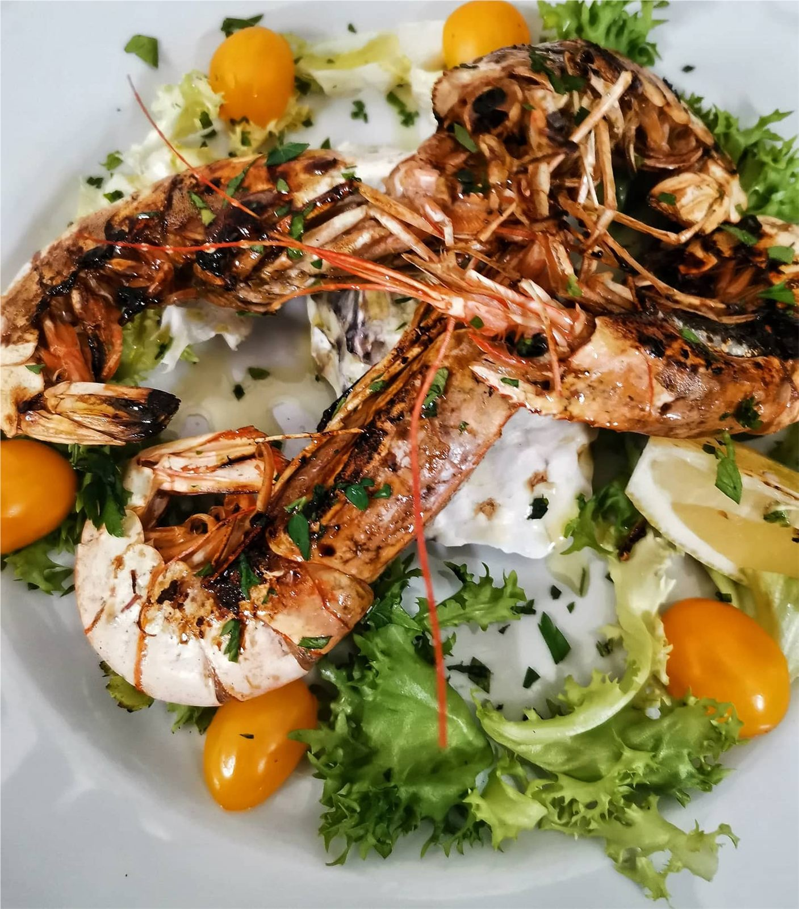
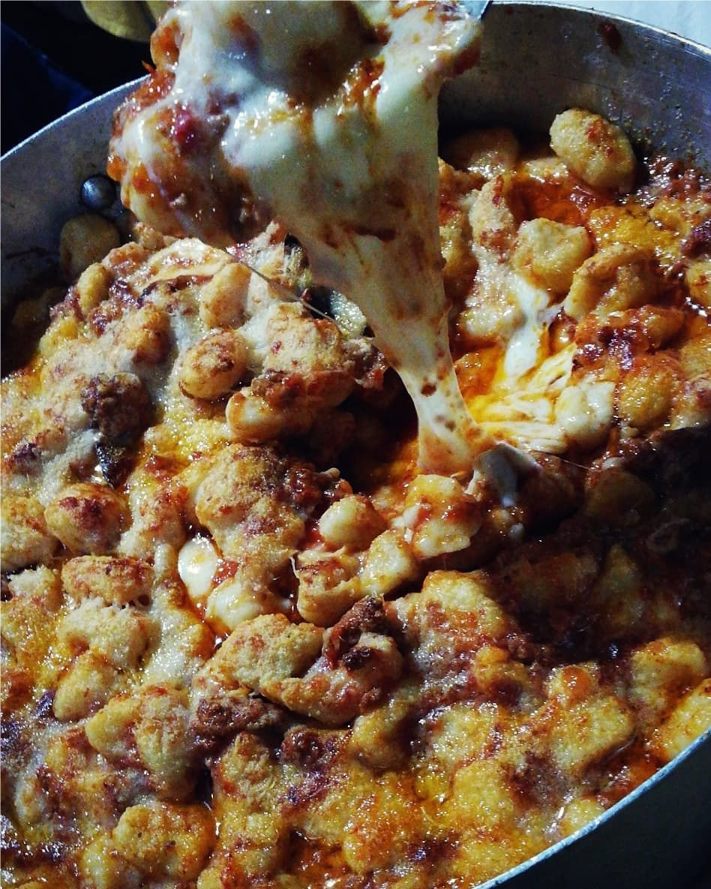
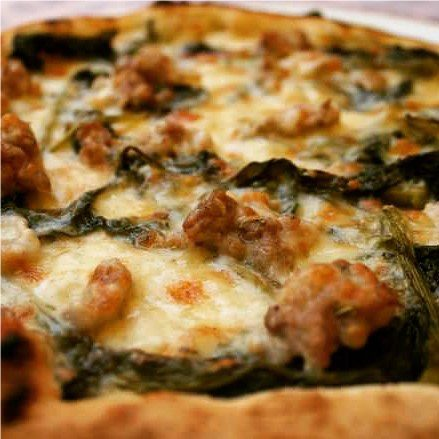

Il pescato
Antipasti, primi e secondi di mare compaiono nel menù pubblicato dall’osteria.
Un’osteria vicana · dal 1969
Cinque tavoli di legno, una famiglia e una cucina di mare e di terra. Un racconto che comincia dalle origini e porta dritto al menù, al telefono e alla porta di Via Roma.
Storia, menù e contatti ripresi dalle pagine pubbliche del locale.

Una storia che merita il primo posto
Nell’ottobre del 1969 Francesco La Ragione e sua moglie Genoveffa aprono una piccola osteria con cinque tavoli di legno. La famiglia La Ragione porta avanti da allora la tradizione napoletana e l’ospitalità vicana.
Scopri le origini dell’osteria ↗La cucina del Buco
Antipasti, primi e secondi di mare compaiono nel menù pubblicato dall’osteria.
Piatti semplici e genuini che raccontano la tradizione napoletana e vicana.
Una tradizione napoletana: pizza cotta nel forno a legna.

Fotografie riprese dalla galleria online dell’attività; da confermare per l’uso nel sito definitivo.
Via Roma 19 · Vico Equense
Il menù online, gli orari e i due numeri diretti sono sempre a portata di mano.